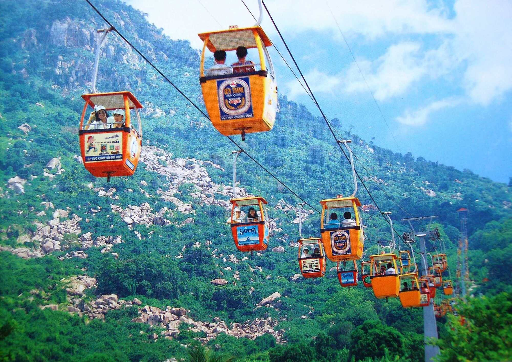
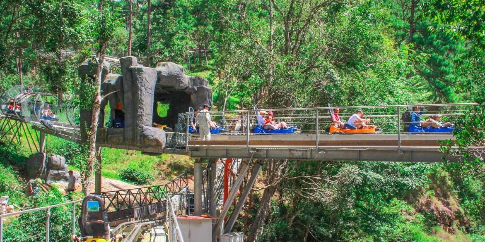
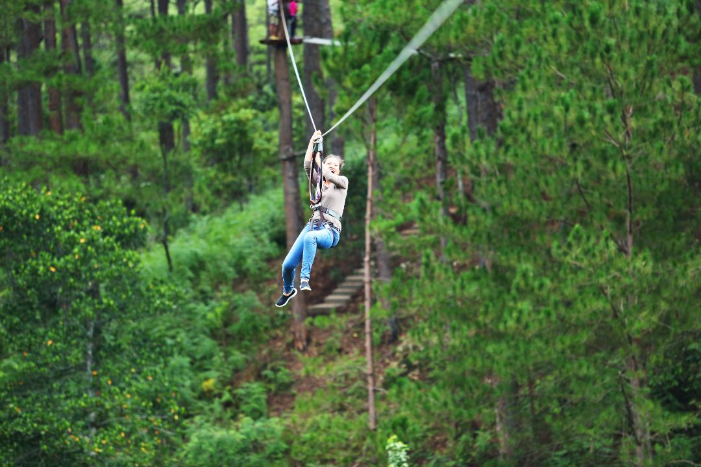
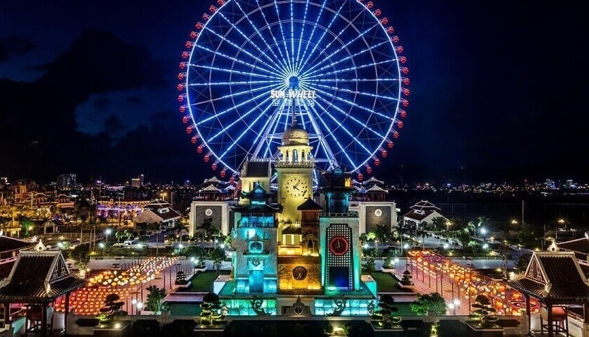
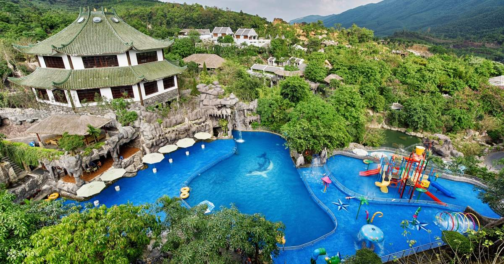
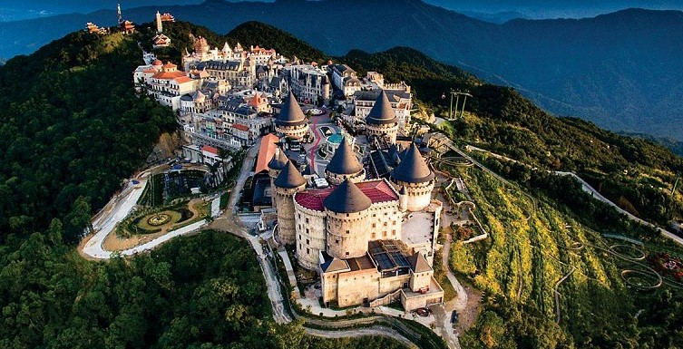
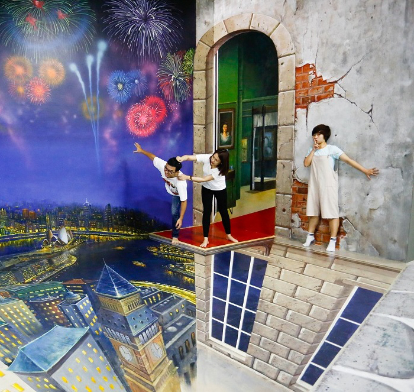
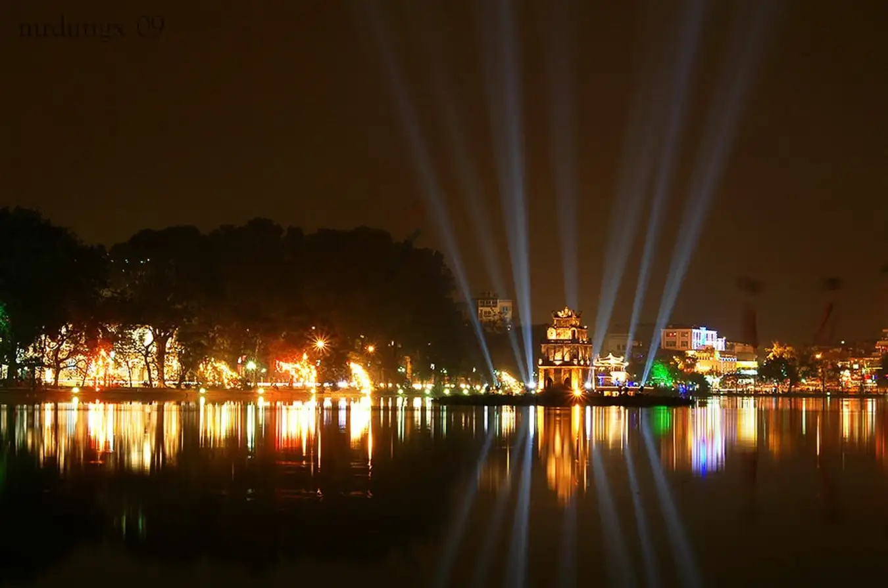
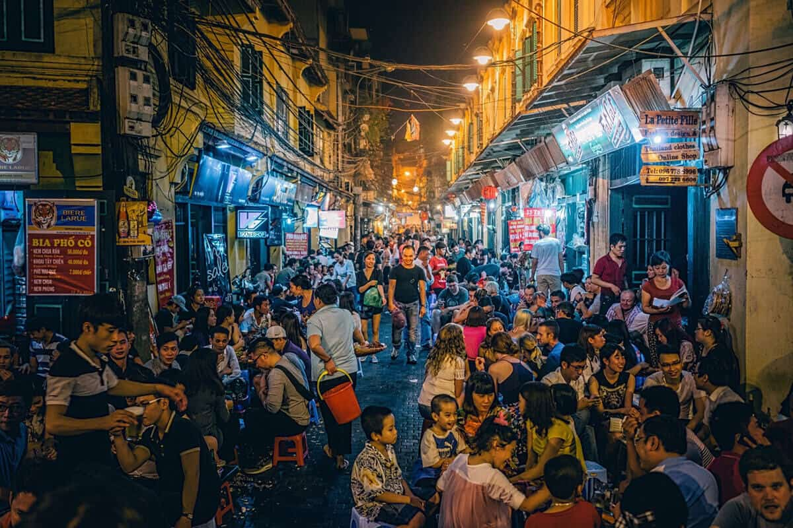

Bạn đã quá quen với một Đà Lạt với chợ đêm, vườn chè xanh ngát hay các quán cà phê quen thuộc? Hãy thử tìm hiểu vùng đất này theo một cách khác, vẫn yên bình nhưng đầy mới lạ với các điểm đến dưới đây.
Danh sách điểm tham quan này có thể thỏa mãn những nhu cầu khó tính nhất, phù hợp với mọi lứa tuổi và mọi loại hình du lịch, từ nghỉ dưỡng cho đến khám phá.
Bảo tàng 3D Trickland chỉ mới xuất hiện trong thời gian gần đây nhưng đã tạo nên một cơn sốt không hề nhỏ. Với các tác phẩm nghệ thuật 3D đa dạng đánh lừa thị giác, đây chính xác là một thánh địa sống ảo - nơi khách du lịch có thể hòa mình, sống trong trong thế giới tranh vẽ và cho ra lò những bức ảnh độc đáo.
Mô hình sở thú kết hợp với quán cà phê có một không hai mà bạn chỉ có thể trải nghiệm ở ZooDoo Đà Lạt. Ở đây, du khách vừa được nhâm nhi ly cà phê đậm vị, vừa tham gia các hoạt động vui chơi. Đặc biệt, đừng quên bỏ lỡ việc cho thú ăn với các loại động vật như thỏ, gấu mèo, lạc đà,...

Ngắm nhìn toàn cảnh thành phố và cảnh sắc núi rừng từ độ cao hàng trăm mét, dịch vụ cáp treo với mức giá cực bèo sẽ mang đến cho bạn một Đà Lạt rất khác, yên tĩnh, xanh mát và ít xô bồ vào mỗi mùa cao điểm.
Với chặng đường nối dài từ đồi Robin đến Thiền Viện Trúc Lâm, tại sao bạn không thử cùng một nửa của mình trải nghiệm không gian lãng mạn này?

Nếu bạn yêu thích các trò chơi mạo hiểm và các hoạt động khám phá ngoài trời, đây là danh sách những điểm đến bạn không thể bỏ lỡ cho chuyến đi Đà Lạt sắp tới. Tại đây, các bạn trẻ có thể thỏa sức chinh phục thiên nhiên, thử thách giới hạn bản thân và giải tỏa những áp lực thường ngày.
Sở hữu máng trượt 2,400m dài nhất Đông Nam Á, xe trượt thác New Alpine ngày càng thu hút đông đảo khách du lịch. Chậm rãi băng qua khu rừng thông qua cung đường trượt, bạn sẽ được sống giữa sự tĩnh lặng của núi đồi và lắng nghe thanh âm trong trẻo từ thác Dalanta yên bình.

Tọa lạc tại đèo Prenn, khu vui chơi đặc biệt này sở hữu 80 trò chơi mạo hiểm lý thú, xếp hạng cấp độ khó từ 1 đến 7, đang cực kỳ phổ biến với giới trẻ hiện nay. Với đu dây zipline, bạn có thể vô tư vui chơi nhưng vẫn đảm bảo an toàn với hệ thống bảo hộ chuyên nghiệp
Đừng quên tham khảo các combo hoạt động tiết kiệm tại đây

Không chỉ là thành phố đáng sống nhất Việt Nam, Đà Nẵng còn là một vùng đất xứng đáng trải nghiệm dành cho những đôi chân mê xê dịch. Bất kể giới tính hay độ tuổi nào, bạn đều có thể tìm kiếm được những hoạt động phù hợp, mới lạ và chắc chắn chỉ duy nhất tại Đà Nẵng mới có thể tận hưởng một cách đầy đủ và ý nghĩa nhất.
Tọa lạc ở trung tâm thành phố, khu giải trí phức hợp Asia Park là một địa điểm vui chơi vô cùng nổi tiếng với giới trẻ. Tại đây, bạn có thể ngắm nhìn thành phố từ vòng quay Sun Wheel, tham gia các trò chơi mạo hiểm, khám phá văn hóa các nước và thưởng thức ẩm thực đường phố.
Tiết kiệm ngân sách du lịch bằng combo giá vé và dịch vụ đưa đón tiện lợi tại đây.

Du khách tìm đến đây để tận hưởng khu trò chơi công viên nước đầy thú vị với thư giãn tại khu jacuzzi và osen, tham gia và chứng kiến đấu trường bùn kịch tính. Đồng thời, các bạn nhỏ sẽ được tham quan công viên khủng long để tìm hiểu về thế giới động vật và môi trường tự nhiên.
Suối nước nóng Thần Tài là một địa điểm hoàn hảo để tránh nóng mùa hè dành cho các gia đình và nhóm bạn vào mỗi cuối tuần.

Mang vẻ đẹp ảnh hưởng từ lối kiến trúc Châu Âu, Bà Nà Hills là một điểm đến thu hút đông đảo khách du lịch trong và ngoài nước. Sau khi đi cáp treo đến đỉnh Bà Nà, hãy vui chơi hết mình tại Fantasy Park, check in tại Cầu Vàng nổi tiếng và tất nhiên, sống ảo tại làng Pháp đẹp như mơ.

3D Art in Paradise là khu bảo tàng nghệ thuật 3D lớn nhất Việt Nam, bao gồm 9 khu triển lãm với sự góp mặt của 130 tác phẩm với chủ đề khác nhau. Từ thần thoại cho đến hoang dã, từ cổ tích đến hiện đại, bạn có thể thỏa sức tạo dáng và chụp ảnh theo từng concept riêng.
Nhanh chóng sở hữu album ảnh trăm ngàn like thôi nào!

Lần đầu đến Hà Nội, bạn muốn tìm đến những địa điểm vui chơi mà giới trẻ Hà thành hay lui tới nhưng lại không có "thổ địa" hướng dẫn. Vậy thì hãy xem qua ngay 10 địa điểm vui chơi cuối tuần Hà Nội do Công ty Sky gợi ý cho bạn nhé. Các địa điểm vui chơi cuối tuần này đa phần đều rất quen thuộc với giới trẻ Hà Nội nhưng với khách du lịch thì không phải ai cũng biết. Còn chần chờ gì nữa mà không đi ngay để khám phá đời sống ở Thủ đô nào!
Cuối tuần, phố đi bộ quanh hồ Gươm lại đi vào hoạt động. Hầu như cả ngày đều có khách bộ hành dạo chơi và chụp ảnh. Tuy nhiên, thời điểm sôi động nhất vẫn là những tối cuối tuần. Những nhóm nhạc tự do thu hút rất nhiều người nán lại để thưởng thức nghệ thuật đường phố với đủ phong cách từ dân gian Việt Nam, nhạc trẻ, hip hop, các vũ điệu latin và cả những nhóm khiêu vũ sôi động nhất.
Từ Hồ Gươm, bạn có thể rẽ ra được nhiều nhánh để đi sâu vào khu phố cổ như vào Tràng Tiền ăn kem, ra Hàng Dầu mua giày dép, Hàng Bạc mua trang sức, vào Bảo Khánh uống cà phê hoặc rẽ vào Cầu Gỗ, Đinh Liệt, Tạ Hiện tụ tập cùng lũ bạn thân bên chút đồ nhắm và âm nhạc.

Địa chỉ: Đường Thanh Niên, Tây Hồ, Hà Nội
Thời gian hoạt động: Cả ngày
Nói về vãn cảnh đền chùa thì không đâu ở Hà Nội nhiều bằng quận Tây Hồ. Thật sự thì nếu dạo xe quanh bờ hồ Tây, bạn không thể đếm hết được có bao nhiêu đền chùa xung quanh. Một số điểm vãn cảnh linh thiêng và nổi tiếng gồm chùa Trấn Quốc, chùa Võng Thị, chùa Kim Liên, chùa Tảo Sách, chùa Bà Đanh, đền Quán Thánh, phủ Tây Hồ, đình Trích Sài, đình Yên Phụ, đình Nghi Tàm...